Cara Menginstall Debian 10 Buster
Langkah-langkah untuk menginstall Debian 10
Langkah 1: Unduh file ISO Debian 10
1. Pertama unduh file ISO Debian di debian.org
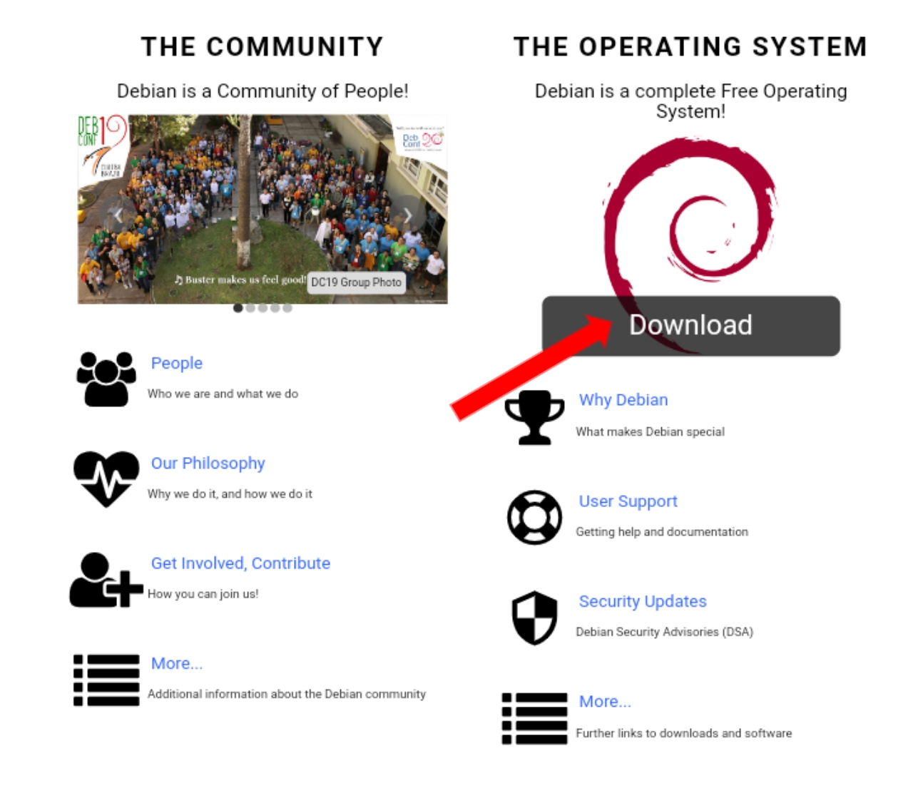Langkah 2: Sistem Boot dari USB
1. Setelah anda menginstall file ISO, buat USB yang dapat di-boot, Kalian bisa menggunakan cara ini Membuat perangkat USB bootable dengan mudah - Rufus
2. Boot sistem dengan memilih media tempat Anda menyimpan file ISO
3. Sistem akan menampilkan Menu Utama Debian dengan beberapa pilihan instalasi. Dalam tutorial ini, kita akan memilih penginstal Graphical Debian Installer.
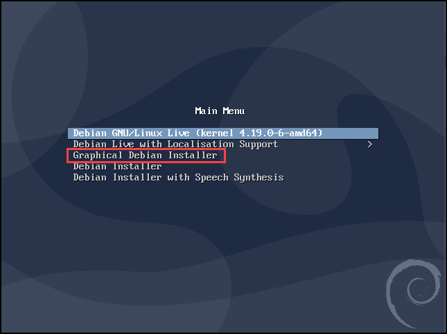Langkah 3: Atur Bahasa, Lokasi, dan Keyboard
1. Mulailah dengan memilih bahasa penginstal dan sistem operasi. Temukan bahasa pilihan Anda dan pilih lanjutkan.
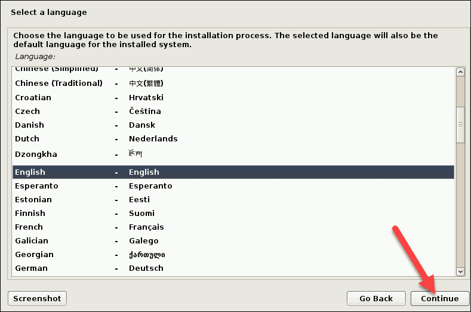2. Selanjutnya, berikan lokasi Anda. Berdasarkan informasi tersebut, Debian akan mengatur zona waktu Anda. Jika Anda tidak dapat menemukan negara Anda terdaftar, pilih yang lain/other untuk daftar yang lebih luas.
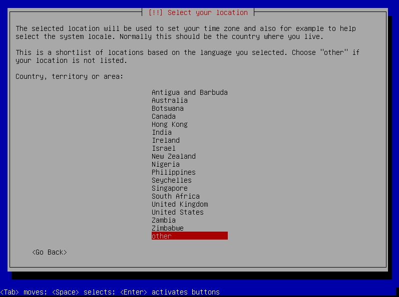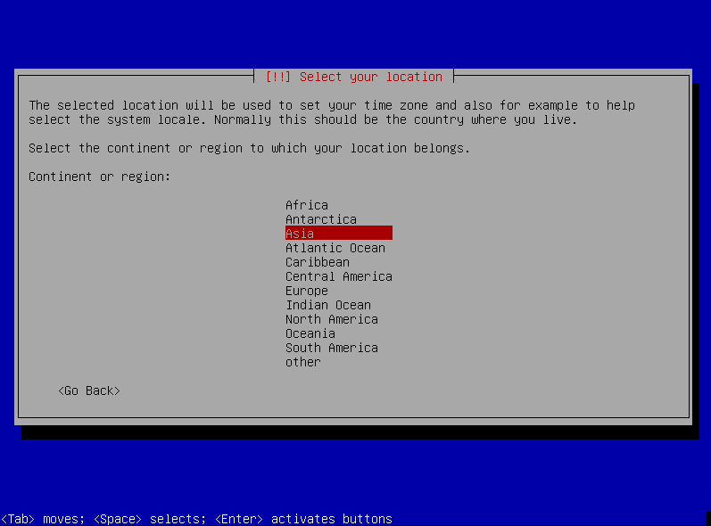
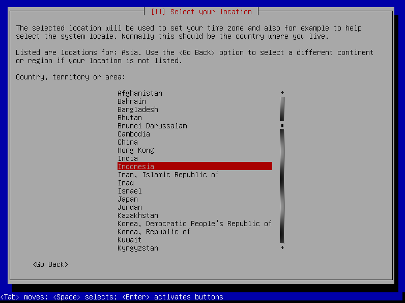
3. Lanjutkan dengan memilih keyboard yang akan Anda gunakan.
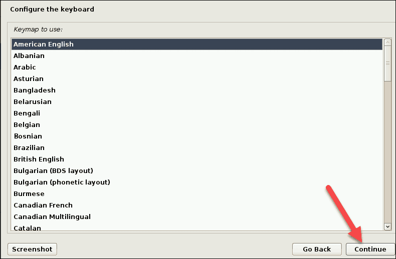Langkah 4: Konfigurasi Jaringan
1. Mulai konfigurasi jaringan dengan memberi nama OS Anda. Ini adalah bagaimana Anda dan sistem lain akan mengidentifikasinya di jaringan. Untuk menyederhanakan proses, Saya menamai jaringan debian-10-buster.
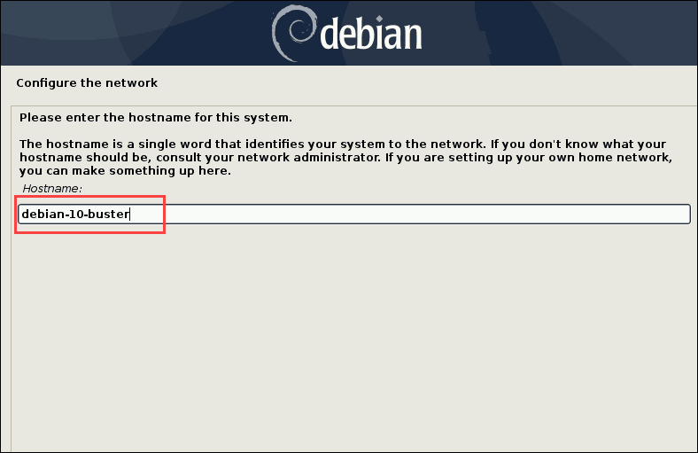2. Juga, bagian dari konfigurasi jaringan adalah menyiapkan nama domain. Jika Anda memiliki website pribadi silahkan di tambahkan jika tidak kosongkan
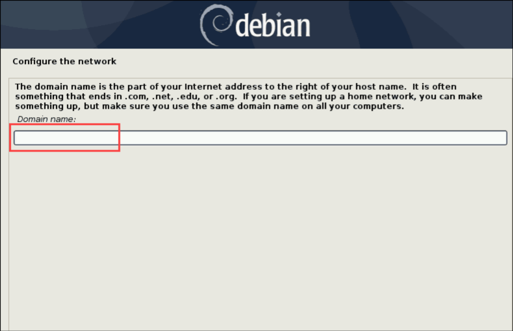Langkah 5: Atur Pengguna, Kata Sandi dan Zona Waktu
1. Langkah selanjutnya adalah mengatur user dan password. Mulailah dengan membuat kata sandi root. Pastikan untuk menyertakan huruf, angka, tanda baca, dan karakter huruf kecil dan besar. Semakin kompleks kata sandi Anda, semakin kecil kemungkinan Anda mengalami pelanggaran keamanan di masa mendatang.
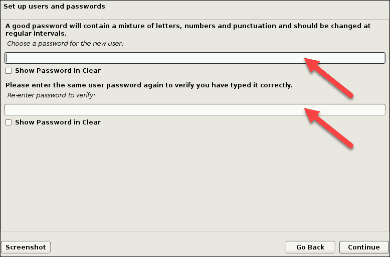2. Kemudian, buat pengguna untuk aktivitas non-administratif. Ketik nama lengkap Anda (atau setidaknya nama depan Anda) dan klik Lanjutkan.
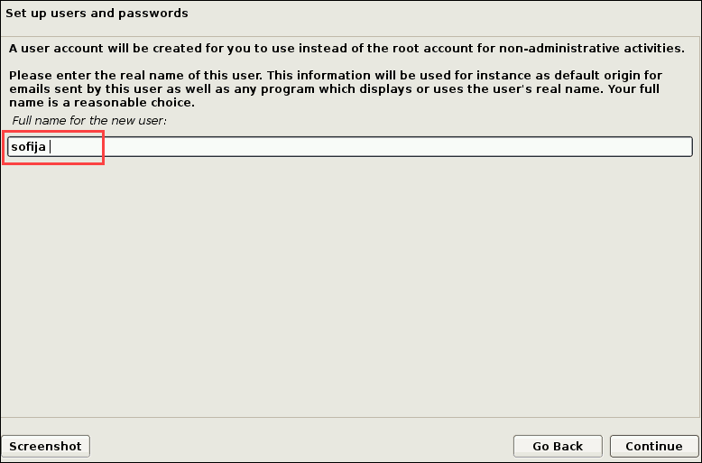3. Sama seperti root, akun pengguna memerlukan kata sandi yang kuat. Buat kata sandi untuk pengguna baru dan masukkan kembali untuk memverifikasi.
4. Memilih Zona Waktu, Karena saya tinggal di Jawa yang zona waktunya adalah WIB. Saya memilih “Western”
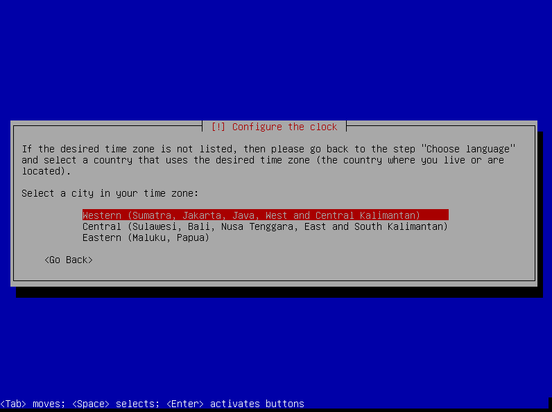Langkah 6: Disk Partisi Untuk Debian 10
1. Untuk mempartisi disk, Anda harus terlebih dahulu memutuskan apakah Anda ingin penginstal memandu Anda melalui partisi atau jika Anda lebih suka melakukannya secara manual. Umumnya, kami menyarankan untuk memilih metode: Guided-use entire disk.
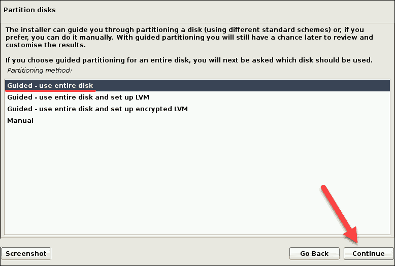2. Pilih disk yang ingin Anda partisi. Ketahuilah bahwa semua data pada drive akan dihapus.
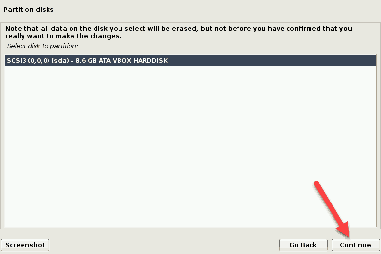3. Kemudian, partisi disk menggunakan skema yang nyaman Anda gunakan. Untuk pengguna baru atau tidak berpengalaman, yang terbaik adalah menggunakan skema default semua file dalam satu partisi.
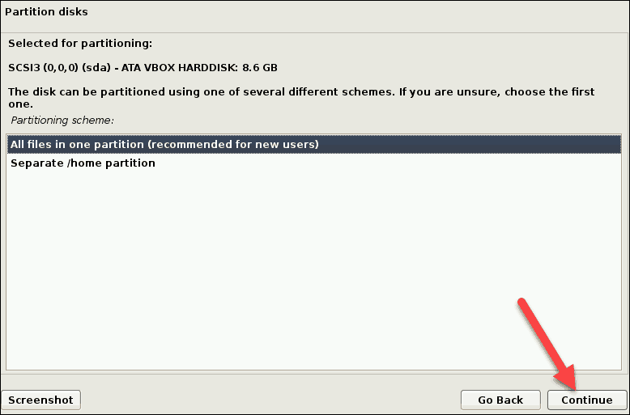4. Pemasang akan menunjukkan kepada Anda gambaran umum tentang konfigurasi disk. Periksa pengaturan dan klik Lanjutkan jika semuanya seperti yang Anda inginkan.

5. Konfirmasikan perubahan ke disk dengan memilih Yes dan pilih Lanjutkan.
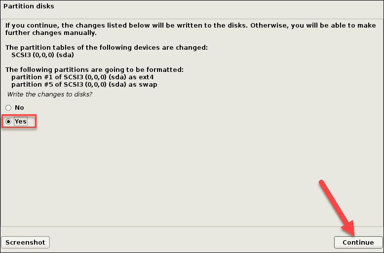6. instalasi akan dimulai
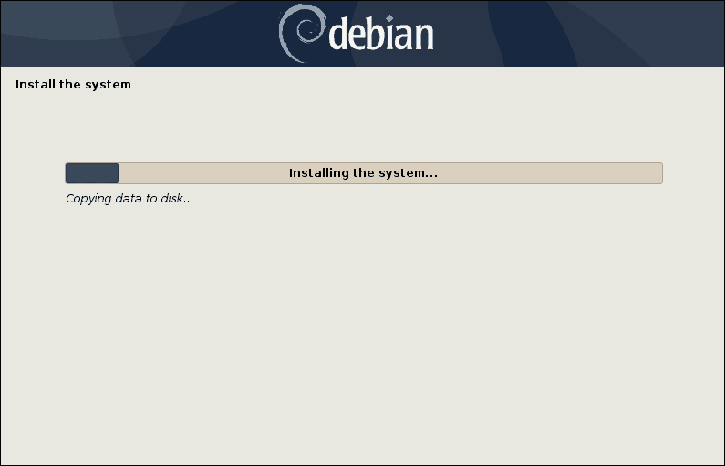Langkah 7: Konfigurasi Akhir
1. Untuk mengkonfigurasi manajer paket, sistem Anda harus terhubung ke internet. Jika sudah terhubung, pilih Yes dan klik Continue untuk menggunakan mirror jaringan.
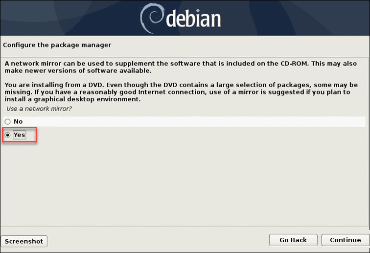2. Kemudian, penginstal akan meminta Anda untuk memberikan lokasi dan URL repositori paket Debian.
3. Pilih apakah Anda ingin berpartisipasi dalam survei penggunaan paket. Jika Anda memilih Yes, pengembang distribusi akan menjalankan skrip pengiriman otomatis di mesin Anda. Survei akan memberikan informasi tentang paket yang paling sering digunakan. Jika tidak, pilih No untuk menjaga kerahasiaan informasi tersebut.
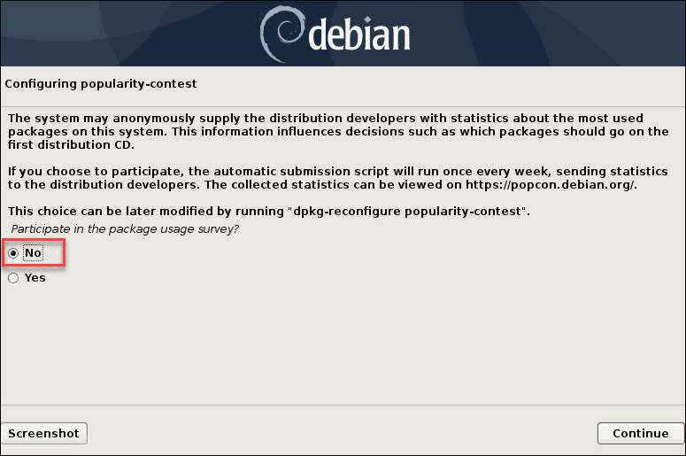4. Selanjutnya, pilih perangkat lunak yang ingin Anda instal sebelumnya setelah Anda menyalakan sistem. Jika Anda menginginkan Antarmuka Pengguna Grafis, pilih GNOME . Juga, adalah ide yang baik untuk menginstal standard system utilities dan perangkat lunak lain yang mungkin Anda perlukan. Setelah Anda memilih semua perangkat lunak, klik Lanjutkan.
5. Jika Debian adalah satu-satunya sistem operasi di komputer Anda, Anda dapat menginstal boot loader GRUB dengan aman di hard disk, seperti yang disarankan.
6. Jendela berikut akan meminta Anda untuk menentukan perangkat yang akan menginstal boot loader. Pilih /dev/sda kecuali jika Anda ingin memasukkan perangkat secara manual.
7. Anda telah selesai mengatur dan menginstal Debian 10, Buster. Pilih Lanjutkan untuk mem-boot ulang sistem.
Langkah 8: Mulai Debian 10
1. Arahkan ke pengaturan Bios dan boot sistem dari disk tempat Anda menginstal Debian Buster.
2. Sebagai hasilnya, bootloader GNU GRUB akan terbuka, dari sana Anda dapat memilih untuk memulai Debian GNU/Linux.
3. Sistem akan meminta Anda untuk masuk dengan akun pengguna yang telah Anda buat. Berikan nama pengguna dan kata sandi dan masuk.
4. Selesai! Anda sekarang akan melihat layar desktop Debian. Ini mengonfirmasi bahwa Anda telah berhasil menginstal Debian 10 Buster pada mesin Anda.